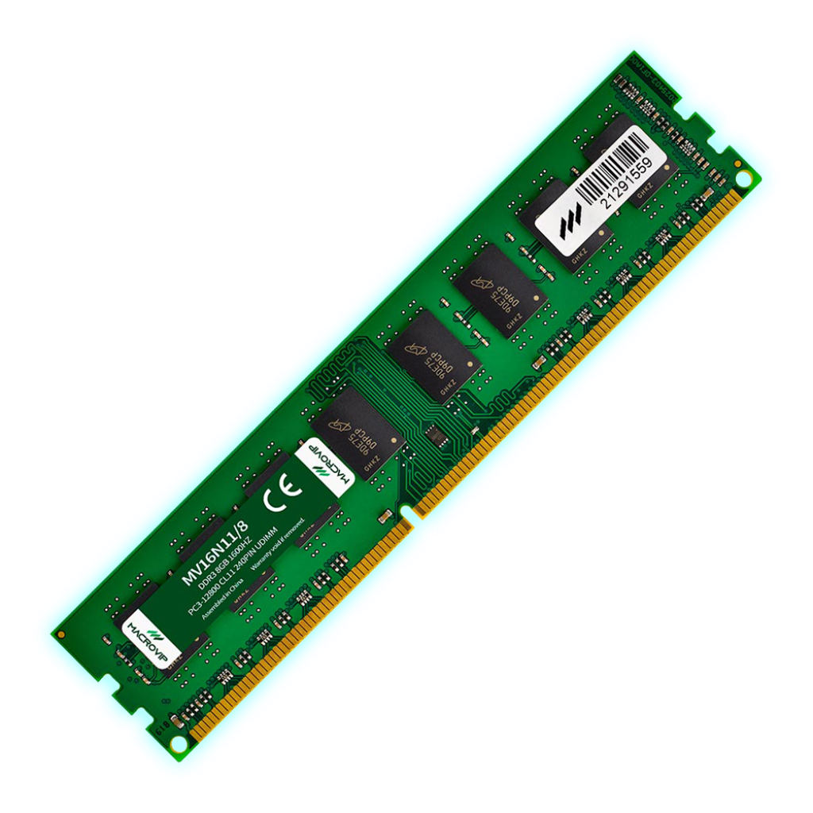

Acopio de gabinetes, periféricos y placas en desuso.
Ensamblando el futuro, reciclando el pasado.
Recuperamos hardware en desuso para reducir la brecha digital y el e-waste.
Ciclo Operativo
Testeo de componentes individuales y rescate de silicio funcional.
Configuración de equipos operativos para uso en comedores y bibliotecas.
Hardware Recuperado

Motherboard ASUS H81M-K
En diagnósticoLote: #0042 - Destino: Biblioteca Popular

Módulo RAM 8GB DDR3
Lote: #0043 - Destino: Taller Comunitario
Iniciar Conexión
Ingresá tus datos para donar equipos o sumarte como voluntario técnico.
Documentación del Sistema
4.1 Sobre el caso
Cooperativa Nodo: Organización dedicada a la recuperación y reacondicionamiento de hardware (e-waste). El sistema vincula a donantes, voluntarios técnicos y referentes de espacios comunitarios. El objetivo web es agilizar el proceso de donación y visibilizar el ciclo de reciclaje técnico.
La elección de Cooperativa Nodo se fundamenta explícitamente en su impacto directo sobre el bien común. Al recuperar hardware en desuso, la organización aborda simultáneamente una urgencia ecológica (la reducción de la basura electrónica) y una problemática social profunda, democratizando el acceso a la tecnología en sectores vulnerables.
4.2 Análisis de referencia
Se deconstruyó el sitio de la Fundación Equidad. Se detectó un uso genérico del diseño corporativo "eco-friendly" y falencias en la jerarquía tipográfica. (Insertar capturas de pantalla de referencia aquí).
Este análisis de referencia influyó de manera directa en las decisiones de nuestro sistema propio. Al detectar que el uso genérico del "verde ecológico" diluía el aspecto técnico, se optó intencionalmente por tomar el camino opuesto. Se implementó una paleta oscura y estética de "hardware expuesto" para asegurar que el diseño comunique primero el ensamblaje técnico.
4.3 Variables del sistema (Design Tokens)
--color-fondo
--color-superficie
--color-primario
--color-accion
4.4 Inventario visual
Convención adoptada: atm- (Átomos), mol- (Moléculas), org- (Organismos)
Átomos representativos:
.atm-tag-estado
Molécula representativa (.mol-card-hardware):
Visible en la sección de "Hardware Recuperado" superior.
4.5 Decisiones técnicas
La estructura macro del layout se resolvió mediante CSS Grid. Para Mobile se utiliza una grilla de 1 columna (`grid-template-columns: 1fr`). Para Desktop (1280px) se declara una grilla base de 12 columnas (`repeat(12, 1fr)`) asignando explícitamente posiciones: el hero ocupa las columnas centrales (3 a 11), mientras que los encabezados abarcan el 100% de la extensión.
El componente principal del inventario (`.mol-card-hardware`) utiliza Container Queries (`container-type: inline-size`). Esto permite que la tarjeta reorganice su microcomposición interna (pasando de apilada a horizontal) en función del espacio disponible en su columna padre.